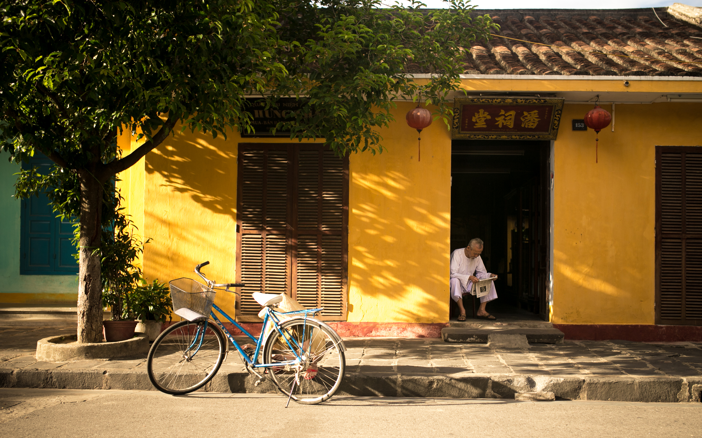

<ion-view title="{{'MENU.HOME_ID' | translate}}" id="page6" class=" ">
    <ion-content padding="true" class="has-header">
        <h1>You want to experience real chinese culture?</h1>
        <h1>Perfect mate, I got something for you!</h1>
      <p>I know its not that easy to get proper ressources to help you learn the chinese language.
      I had the same problem. So let me show you what I have in mind to create here:</p>
      <ul>
        <strong><li>- Creating a database for chinese content,useful in learning chinese mandarin</li></strong>
      </ul>
      <br>
      <p>.. well that was mainly it I think.
        Sounds good enough.
        Good luck mate!
        <br>
        Ah yeah before I forget:
        <br>
        If you happen to have other cool links you would like to share please contact me and I will add them !
      </p>
        <div style="margin: 0px; line-height: 250px; text-align: center; background-color: rgb(232, 235, 239);">
            
        </div>
    </ion-content>
</ion-view>
